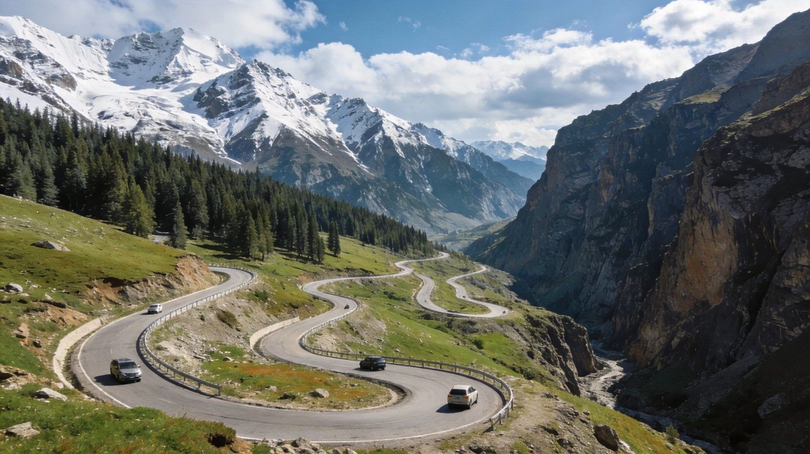
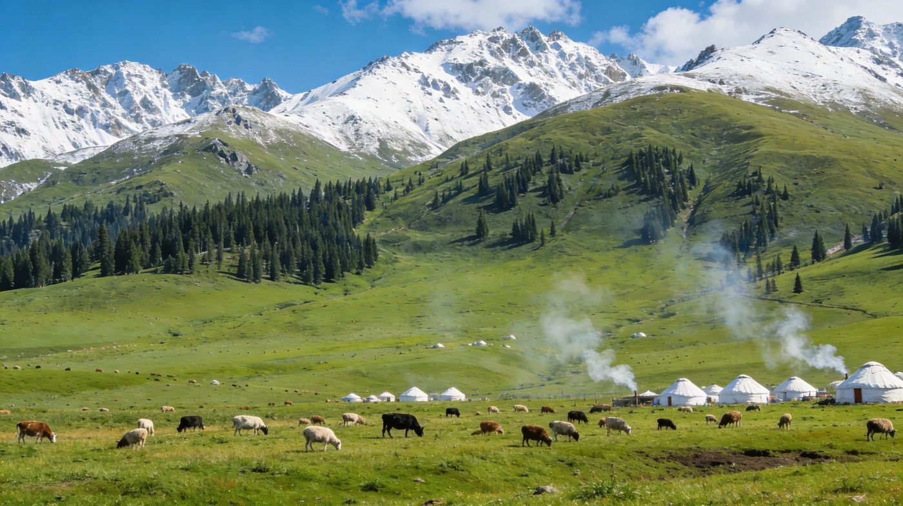
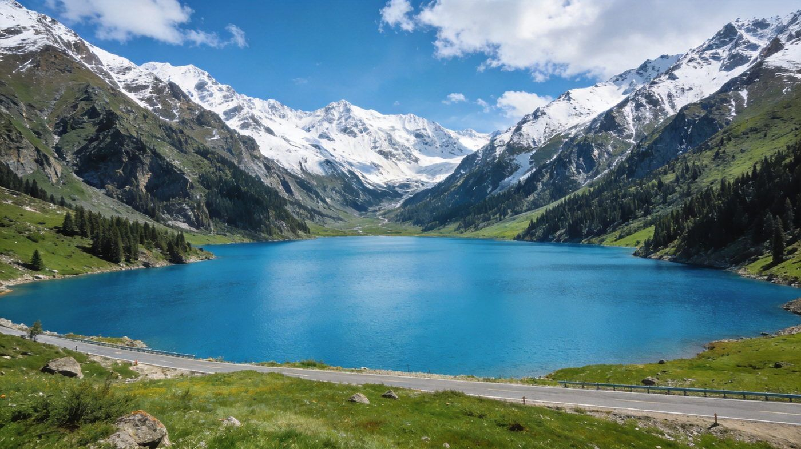

🏔️ 新疆 · DUKU ROAD & YILI GUIDE
独库公路 + 伊犁双版自驾指南
纵贯天山脊梁的「中国最美公路」，一日有四季，串联草原、雪山、峡谷、大龙池与伊犁薰衣草。核心看点：独库盘山路、那拉提空中草原、巴音布鲁克九曲十八弯、大龙池、乔尔玛烈士陵园、伊犁薰衣草。求快走 3 天精华版，想深度走 5 天深度版。适合 1–3 人，含行程 / 住宿 / 美食 / 预算 / 出行方式对比。
📍 目的地：独库公路+伊犁（新疆）👥 1–3 人⏱️ 3 天 / 5 天双方案💰 人均预算已附
🛣️3 天精华 · 独库核心段
核心策略：D1 穿北段达坂看「一日有四季」+乔尔玛，D2 那拉提空中草原，D3 巴音布鲁克九曲十八弯日落，独库核心全拿捏。
👥 1–3 人适配：独库公路长、弯道多，2–3 人 自驾最爽但需经验，也可包车；全线禁 7 座以上车、普通家用车可通行。预算按 人均 标注。
🗺️ 行程安排
DAY 1 · 独库北段 + 乔尔玛烈士陵园
🚗 独山子出发（独库公路北段）🏔️ 守望天山·哈希勒根达坂（翻越冰达坂·一日有四季）
🌹 乔尔玛烈士陵园（纪念 168 名筑路官兵）🏨 宿乔尔玛 或 那拉提镇
💡 独库全长约 561 公里、每年仅 6–10 月开放，主线基本免费（盐水沟约 20 元）；北段达坂海拔最高约 3400 米、一日多变，务必出发前查官方通行通告与天气，备防风衣。
DAY 2 · 那拉提空中草原
🌿 那拉提草原（空中草原+河谷草原）🛣️ 沿独库中段前往巴音布鲁克
🏨 宿巴音布鲁克镇
⚠️ 那拉提门票约 95 元/人，空中草原区间车约 40 元；草原辽阔需乘区间车深入。中段路况不错但车流较大，注意会车与限速。
DAY 3 · 巴音布鲁克九曲十八弯 + 返程
🌅 巴音布鲁克草原（天鹅湖）🛣️ 傍晚 九曲十八弯观景台看「九个太阳」日落
🚗 下山 返程（或续接伊犁）
💡 巴音布鲁克联票约 140 元（含区间车），区间车末班较早，看日落务必留足往返时间、提前返程别错过末班；开都河河曲在日落时分可遇「九曲十八弯」奇观。
🏞️5 天深度 · 伊犁环线
在核心段基础上补赛里木湖、霍城薰衣草，串联伊犁河谷精华，节奏更松、最适合夏季深度游。
👥 1–3 人适配：5 天环线里程较长，自驾或包车最合适；伊犁薰衣草最佳仅 6 月中旬约一周，霍城薰衣草园旺季约 35 元/人。预算按 人均 标注。
🗺️ 行程安排
DAY 1 · 独库北段 + 乔尔玛
🚗 独山子出发🏔️ 哈希勒根达坂·一日有四季
🌹 乔尔玛烈士陵园🏨 宿那拉提镇
💡 北段是独库景观最密集段，雪峰、峡谷、草原轮番登场；乔尔玛陵园免费、肃穆庄重，适合静心凭吊筑路人。
DAY 2 · 那拉提草原一整天
🌿 空中草原 + 河谷草原🐎 体验草原观景/骑马/民俗
🏨 宿那拉提镇
⚠️ 那拉提由空中草原、河谷草原与森林公园三部分构成，一天可走空中草原+河谷草原两条线，区间车分段购；6–9 月草原碧绿、常有哈萨克民俗活动。
DAY 3 · 巴音布鲁克九曲十八弯
🛣️ 那拉提 → 巴音布鲁克🌅 天鹅湖 + 九曲十八弯日落
🏨 宿巴音布鲁克镇
💡 联票约 140 元（含区间车）；巴音布鲁克是中国最大天鹅繁殖地之一，草原开阔、河曲蜿蜒，日落「九个太阳」是经典打卡。
DAY 4 · 果子沟 + 赛里木湖
🛣️ 巴音布鲁克 → 果子沟大桥💧 赛里木湖（高山冷水湖·环湖公路）
🏨 宿果子沟/赛里木湖沿线
💡 赛里木湖被称为「大西洋最后一滴眼泪」，湖水极清澈、环湖公路适合自驾停车；果子沟大桥横跨峡谷、气势震撼，注意观景台停车规范。
DAY 5 · 霍城薰衣草 + 伊宁返程
💜 霍城薰衣草园（解忧公主园等）🏙️ 伊宁市区/返程
🚗 结束行程
💡 霍城与法国普罗旺斯同纬度，被称为「中国薰衣草之乡」；最佳观赏期约 6 月中旬、仅一周左右，薰衣草园旺季约 35 元/人（路边农田拍照约 5–10 元）。赶不上花期可改走喀拉峻或昭苏草原。
⭐特色景点 · 单独详览
把独库+伊犁最有辨识度的 3 个点单独拎出来说清楚——值不值得去、怎么玩。

独库公路 · 盘山天路
公路旅行
独库公路 · 纵贯天山脊梁的中国最美公路
全长约 561 公里，北起独山子、南抵库车，穿越天山南北，把戈壁、草原、林海、湖泊、冰川连为一体；因翻越海拔近 3400 米的冰达坂，「一日有四季」名不虚传，开车体验变幻无穷。
👍 必去理由：核心中的核心。一年仅开放约 6–10 月、冬季封路；自驾可随时停车，但弯道多、注意会车与落石。9 年 168 名筑路官兵在此奉献生命，乔尔玛烈士陵园值得凭吊。
配图：原创生成 · 无版权风险

那拉提 · 空中草原
高山草原
那拉提 · 世界四大草原之一
位于那拉提山北坡的中山地草原，由空中草原、河谷草原及森林公园三部分构成，夏季碧绿如毯、野花烂漫，雪山森林相映，是世界四大草原之一的亚高山草甸景观。
👍 必去理由：必打卡。门票约 95 元/人，空中草原区间车约 40 元；6–9 月是黄金季，常有哈萨克民俗活动与牧野体验，草原辽阔务必乘区间车深入核心区域。
配图：原创生成 · 无版权风险

大龙池 · 高山湖泊
高山湖泊
大龙池 / 小龙池 · 天山路上的碧玉
位于独库公路南段的冰川融水高山湖泊，湖水碧绿清澈、四周雪山针叶林环绕，湖面平静如镜倒映雪山，是独库公路通往库车方向的经典自然打卡点。
👍 必去理由：值得停靠。大龙池、小龙池一般在路边观景即可、基本免费；湖水属雪山冷热水交替，别下水；南段临近库车，可一并安排天山神秘大峡谷。
配图：原创生成 · 无版权风险
🚗怎么去：自驾 vs 包车 vs 跟团
独库公路一年只开约 4 个月、且以自驾著称，三种方式取舍要看清。
独库公路+伊犁自驾/包车/跟团三种出行方式对比
| 维度 | 🚗 自驾 | 🚙 包车 | 🚌 跟团/拼车 |
|---|
| 核心体验 |
独库灵魂就在「开」，达坂、峡谷、草原随时停车，节奏完全自己定，最能体会公路旅行的自由 |
司机熟悉全程路况与最佳机位，免去长距离山路疲劳，2–3 人可拼车分摊，同样自由 |
新疆经典线成熟，有讲解省心，但行程固定、难在冷门机位久留，节奏偏赶 |
|---|
| 适合有山路/长途驾驶经验或想体验驾驶乐趣者 | 适合不想开山路、想轻松赏景的 2–3 人团 | 适合一个人图省心、或不想做行前功课的游客 |
| ✔ 自由度与驾驶体验拉满 | ✔ 免疲劳、可拼车分摊 | ✔ 全程安排、有讲解 |
| 费用参考 |
3–5 天租车+油费约 1500–3000 元/车 | 包车约 800–1200 元/天（含司机+油费，独库线） | 新疆经典团约 2000–4000 元/人起 |
|---|
| ✔ 2–3 人拼车自驾人均最省 | ✘ 人少时人均偏高 | ✘ 可能有自费/购物点、节奏紧 |
| 💡 一句话建议：享受驾驶且 2–3 人 → 自驾；不想开山路想自由 → 包车；一个人或图省心 → 跟团/拼车。 |
|---|
👥 1–3 人怎么选：独库以自驾为主，2–3 人自驾/包车最划算；单人可拼小团。全程禁 7 座以上车，普通家用车均可通行，出发前确认天气与官方通行通告。
🏨住宿推荐
三档价位，均为 2 人房计（旺季伊犁住宿偏贵）。
经济型那拉提/巴音布鲁克客栈
约 200–400 元/晚 · 人均 100–200
镇区民宿配套成熟，近草原与景点出发口，性价比高。
中端舒适草原民宿/中档度假酒店
约 350–650 元/晚 · 人均 175–325
那拉提、巴音布鲁克沿线的景观民宿，推窗见草原。
高端体验度假酒店/星空蒙古包
约 700–1500 元/晚 · 人均 350–750
草原星空房、雪山景观房，适合度假与出片，旺季需提前订。
🍖独库+伊犁必吃清单
哈萨克草原风味 + 新疆硬核美食，沿线村镇馆子都能尝到。
5酸奶 / 馕 / 烤包子手作面点 · 途中能量补给
约 15–40 元
💰预算对比（人均）
区间为保守–宽松（不含往返大交通），实际以淡旺季与选择为准。
独库3天精华与5天深度方案人均预算对比
| 项目 | 3天精华版 | 5天深度版 |
|---|
| 大交通（往返） | 约 600–1200 | 约 600–1200 |
|---|
| 住宿 | 2 晚 200–400 | 4 晚 500–1000 |
|---|
| 餐饮 | 约 250–450 | 约 450–750 |
|---|
| 门票+区间车（那拉提/巴音布鲁克/薰衣草等） | 约 300–450 | 约 400–650 |
|---|
| 交通/租车（人均分摊） | 约 350–700 | 约 600–1100 |
|---|
| 合计 · 人均 | 约 1800–2800 | 约 2800–4200 |
|---|
💡 怎么省：2–3 人自驾/包车分摊最省；独库主线基本免费；那拉提、巴音布鲁克联票与门票区间车可提前购优惠；夏季订房订票趁早，价格上浮明显。
🧭避坑 & 实用贴士
- 独库开放窗口短：每年仅约 6–10 月开放、冬季封路，7 座以上禁行；山区天气一日多变，出发前务必查官方通行通告与实时天气。
- 「一日有四季」温差极大：达坂海拔最高约 3400 米，山下盛夏、山巅飞雪，翻越务必备四季衣物与防风外套，注意车速与连续弯道。
- 山路要谨慎驾驶：全程弯道多、长下坡多、偶有落石与雨雾，新手建议选包车/跟团，全程合理规划加油（沿线约 5 座加油站：独山子、乔尔玛、那拉提、巴音布鲁克、天山神秘大峡谷一带）。
- 巴音布鲁克别错过末班区间车：看「九曲十八弯」日落要留足往返时间，区间车末班较早，返程晚很麻烦。
- 伊犁薰衣草有时效&别误入牧区：最佳赏花期仅 6 月中旬约一周；赏花走正规薰衣草园或农庄，尊重草原生态与哈萨克/蒙古民俗，垃圾带走、不随意碾压草场。